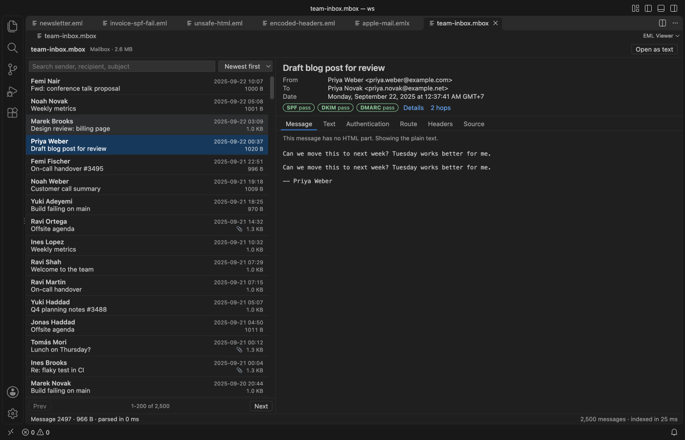

Open files in VS Code and Cursor / Office files
MBOX to EML in VS Code, one file per message
Open the .mbox file in EML Viewer and run Split mailbox into .eml files. It writes one .eml file per message, named by number and subject. Reading, searching and sorting the mailbox is free. The split is a Zovo Pro tool with 3 free tries on your computer.
Free, MIT license. Extension ID zovo.eml-viewer, version 0.2.2. Needs VS Code 1.90.0 or newer.
Also free from Zovo: DOCX Viewer & ODT Viewer, VS Code Marketplace · Open VSX (Cursor, Windsurf).

Steps in VS Code
- Install EML Viewer from the Marketplace, or press Ctrl+P (Cmd+P on macOS) and run
ext install zovo.eml-viewer. - Click the
.mboxor.mbxfile in the Explorer. The first 200 messages show while the rest of the mailbox is still being read. - Use the search box and the sort menu to check that this is the mailbox you want to split.
- Open the editor title menu (
...) and pick Split mailbox into .eml files. You can also right-click the mailbox in the Explorer or run the tool from the Command Palette. - The first 3 runs are free. A try counts only when the tool has saved its result.
- You get one
.emlfile per message, named by number and subject. Each one opens in EML Viewer like any other mail file.
Where Zovo Pro saves time
Reading .eml, .emlx and .mbox files is free, with mailbox search and sort, the SPF, DKIM and DMARC badges, the route, headers and source, and saving attachments one by one. The split into .eml files is a Pro tool.
Two more Pro tools work on a whole mailbox or folder at once. Mail list to CSV writes one row per message (date, sender, recipients, subject, attachment names, size, SPF, DKIM and DMARC results and the hop count), and Save all attachments saves every attachment in one go, with the message number in front of each name.
With Split mailbox into .eml files (Zovo Pro)
- Right-click an
.mboxfile, an.emlfile or a folder of mail files in the Explorer. - Pick Mail list to CSV for a table that opens in Excel or Numbers (the "eml to csv" job).
- Pick Save all attachments and choose a folder. No file is overwritten.
- Each Pro tool has its own 3 free tries.
Split mailbox into .eml files works 3 times on your computer before it asks for a license, and a try counts only when you get a result. Opening a file shows no popup and no countdown.
Zovo Pro costs USD 19 once. It is not a subscription, and it turns on the Pro tools in every Zovo extension, not only EML Viewer. After a card payment (Stripe) your license key shows on the next page. In VS Code, run "Zovo Pro: Enter Zovo Pro license key" from the Command Palette and paste it. The key is checked on your computer, with no network call. With GitHub Sponsors, pick the "$19 one time" tier, then run "Zovo Pro: I already paid: unlock with GitHub Sponsors" and sign in with the same GitHub account. With PayPal, send USD 19 with "Zovo Pro" in the note and the key comes by email within a day.
A team of 5: USD 59 once, by card or by PayPal. Every rule and every Pro tool is on the Zovo Pro page.
Steps in Cursor, Windsurf or VSCodium
- Open the Extensions view with Ctrl+Shift+X (Cmd+Shift+X on macOS).
- Search for
zovo.eml-viewerand click Install. Cursor, Windsurf and VSCodium install from Open VSX, where it is published aszovo/eml-viewer. - If your editor has no gallery, download the .vsix from the Open VSX page and run "Extensions: Install from VSIX...".
- Then use it the same way as in VS Code.
What EML Viewer handles
- Mailboxes from Thunderbird, Gmail Takeout, Apple Mail export and mail servers.
- Both mboxo and mboxrd files. A
Fromline only starts a new message at the top of the file or after a blank line, and>Fromquoting is undone. - Large mailboxes: the file is indexed as a stream. A 42 MB mailbox with 39,000 messages was fully indexed in 0.3 s in the README test.
- Each message is read from disk when you pick it, so a big mailbox does not fill memory.
- The mail file is never written. Scripts in a message never run.
What it does not do
- Files over 4 GB show a message instead of opening. A single message over 200 MB (setting
emlViewer.maxMessageMB) also shows a message. - Outlook
.msgand.pstfiles are not supported. - It does not join
.emlfiles back into an.mboxand does not upload messages to a mail account.
Other options
- Thunderbird with the ImportExportTools NG add-on. Free. Import the mailbox into Thunderbird and export the folder as .eml files. A good choice if you already use Thunderbird and want the messages in a mail client afterwards.
- R package tm.plugin.mail (convert_mbox_eml). Free.
convert_mbox_eml()splits a mailbox into single message files. Use it if your text analysis already runs in R. - Python mailbox module. Free and part of Python. A short loop over
mailbox.mboxcan write each message to its own file. The better choice for scripts, servers and repeated jobs. - Paid Windows converters. Most top search results for this phrase are paid Windows converters. Their free trials are limited to a small number of messages, so check the limit before you start.
Install counts and Open VSX status were checked on 10 November 2026. Descriptions in quotes are the extensions' own.
Questions
Does it work in Cursor or Windsurf?
Cursor and Windsurf install extensions from Open VSX. Search for EML Viewer in their Extensions view and install it there. The viewer and the Pro tools work the same way.
Is my mail sent anywhere?
No. EML Viewer makes no network calls and has no telemetry. The Pro tools work offline and send nothing anywhere. Remote images in a message stay blocked until you click Show images.
Can I split a Gmail Takeout mailbox?
Yes. The README lists Gmail Takeout among the .mbox sources it reads. Open the file, then run Split mailbox into .eml files.
How are the new .eml files named?
By message number and subject, one file per message of the mailbox.
My Thunderbird Inbox file has no extension. Can I open it?
Yes. Right-click the file and pick "Open in EML Viewer", or use "Reopen Editor With..." from the editor title menu.
More about EML Viewer
Read the EML Viewer page for every feature and setting, or the source code on GitHub.
Related guides
- DOCX Viewer & ODT Viewer on the VS Code Marketplace (also on Open VSX). Shows Word .docx, .doc, .odt and .rtf files as pages, with a dark mode.
- Check SPF, DKIM and DMARC of a suspicious email
- Open a .docx Word file in VS Code
- View a PowerPoint .pptx file in VS Code
- Read PDFs in dark mode in VS Code
Support this work
If this extension saves you time, you can support the work on GitHub Sponsors. Monthly tiers start at $5, and one-time tiers start at $15. Sponsorship is optional, and the tool works the same without it.
Need your format supported?
Open a format request with a sample file, and I reply there whether it can be done. For USD 299 once, through this GitHub Sponsors tier, I add your file format or a missing feature to this extension, with tests, within 7 days.